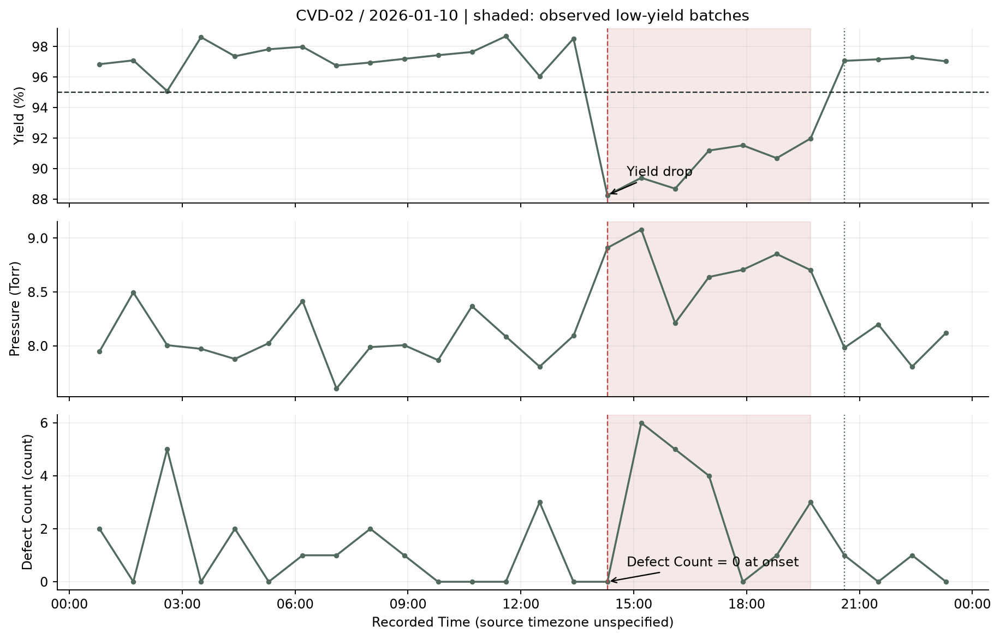

01 / Excursion Detection & SPC
Locate the time window, then compare the signals.
I first check batch records, timestamps and missing values, then flag yield below 95% for review. On January 10, 2026, CVD-02 has 7 consecutive low-yield batches, prompting a closer look at process conditions in the same window.

Engineering InsightPressure and yield shift in the same batch, but Defect Count is 0 at onset. This supports investigating pressure alongside yield; it does not establish that pressure caused defects before yield dropped.
“I first locate the excursion, then put yield and process parameters on the same timeline. Signals changing together give me an investigation lead, but they do not prove causation.”
Follow-up: How does the 95% threshold differ from SPC limits?
The 95% value is the case's low-yield screening threshold. SPC asks whether a measurement falls outside the historical variation range. I use I-MR charts to monitor individual values and changes between successive batches.
I establish separate baselines for each Tool × Recipe, estimate limits from the first chronological 60% of its records and freeze those limits for later observations. Signals also occur within the baseline, so these limits support retrospective screening and still need production baseline qualification.
Pressure I-MR Chart · Excursion Batch Table · Full Six-Parameter Timeline


02 / Tool Health
Compare failure frequency and variability.
The three tools have similar average yield. I also compare low-yield rates and variability, subtracting each recipe's mean before calculating variability to reduce recipe-mix effects. Standard deviation (SD) describes the spread: a higher value means greater batch-to-batch variation.
| Tool | Batches | Low-yield Rate | Yield SD percentage points | Pressure SD Torr |
|---|---|---|---|---|
| CVD-01 | 160 | 11.2% | 2.00 | 0.257 |
| CVD-02 | 181 | 18.8% | 1.89 | 0.259 |
| CVD-03 | 159 | 9.4% | 1.88 | 0.269 |
- CVD-02: A 18.8% low-yield rate makes recurring excursions a priority for investigation.
- CVD-01: Higher yield variability calls for closer monitoring of yield repeatability.
- CVD-03: Higher pressure variability calls for closer monitoring of process-condition stability.
“The tool with the most low-yield batches may differ from the tool with the largest yield or pressure variation. I use each measure to decide which checks to prioritize.”
Follow-up: Why account for recipe differences?
The two recipes target film thicknesses of 100 nm and 105 nm. Pooling them can make a legitimate recipe change look like tool drift. Centering by recipe mean reduces that effect, but it cannot remove every confounding factor.

03 / Potential Root Cause
Defects rank first. Why investigate pressure first?
I combine correlations with yield, group differences and effect sizes, then account for Tool, Recipe and time to prioritize potential contributors. The top three across the dataset are:
- Defect Count: The strongest association with yield (r = -0.64), but defects may be an outcome of a process problem rather than an equipment cause.
- Pressure: The highest-ranked process variable. It also shifts alongside yield at case onset, making it a priority for inspection.
- Temperature: Another associated variable; recipe settings and measurement records deserve review.
“Statistical screening narrows the investigation. The timeline helps me assess whether a lead fits the event. Both make pressure worth checking first, but I still need equipment records to confirm the cause.”
Follow-up: How do you avoid treating correlation as a root cause?
The normal and abnormal groups are defined by yield, which introduces outcome-selection effects. Adjusting for known variables cannot exclude unknown factors. I would review pressure setpoints versus actual readings, sensor calibration, throttle-valve response, vacuum and leak checks, and MFC records, then look for repeat events.
Equipment maintenance data is not available, therefore these are engineering hypotheses rather than confirmed hardware root causes.
Full Contributor Ranking · Effect Sizes and Statistical Results

04 / Virtual DOE & Process Window
Use the evidence to plan validation.
I examine Pressure and Temperature together to identify historical conditions with higher and more stable yield. This is Virtual DOE / Observational Analysis; no randomized wafer experiment was performed.
The RCP-A candidate cell contains 47 batches, with mean yield of 97.66% and SD of 0.79 percentage points. It helps select conditions for testing, but is not a qualified process window.
“Historical data helps me choose conditions worth testing in a formal DOE. I check sample size and variation alongside average yield, because a small high-yield group may simply be lucky.”
Follow-up: How is the candidate selected, and do Pressure and Temperature interact?
Within each recipe, I divide Pressure and Temperature into low, medium and high groups. Among cells with at least 10 batches, I select the highest mean yield minus SD. This is an exploratory ranking, not a specification or confidence bound.
RCP-A's candidate observed range is Pressure 7.965–8.072 Torr and Temperature 319.85–320.77 °C. Some combinations inside this rectangle may never have been sampled.
The regression's Pressure × Temperature interaction has p = 2.6e-08. The observed association changes with the other factor; this does not establish a validated process effect. A formal DOE needs randomization, replication and tool blocking.

Engineering InsightThe red rectangles identify historical conditions worth testing. They cannot directly justify a production recipe change. The RCP-B candidate has only 10 batches, so its evidence is more limited.

05 / Engineering Recommendations
Turn the findings into three practical actions.
The engineering judgment this project demonstrates
I can locate a problem in batch records, separate recipe differences from tool variation, combine evidence to prioritize an investigation and explain which conclusions the data supports and which still need validation.